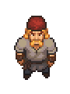

Woodcutter
| Woodcutter | |
|---|---|
 | |
Basic Information
| |
Location :
|
North of Tress |

The Woodcutter is an NPC located north of the Village, not far from the Mountain Fort.
History
From dialogue with the woodcutter we can gather that he was once rich and lived in a mansion, before giving it up to live a simpler life.
Quests
A Nicer Axe
Woodcutter asks you to bring him an iron axe. If you talk to him again you say that you have a nicer axe and give him
Axe I, he will reward you with the Lasagna and Pasta recipes.
The Golden Apple
After you finishing the Bishop quest "Hold the Ceremony", you have to talk to Bishop one week later to wrap it up. Then go to the Dead Horse which will trigger this quest.
Woodcutter meets you inside The Dead Horse and talks about a golden apple that he's willing to trade. To get one golden apple you must trade him: x24 Roof tile and x4 curtains.
| |||||||||||||||||||||||||||||